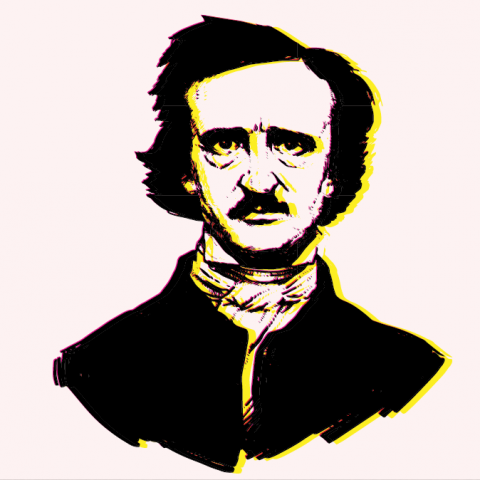

 Allan Poe (Boston, Estados Unidos, 19 de enero de 1809-Baltimore, Estados Unidos, 7 de octubre de 1849) fue un escritor, poeta, crítico y periodista romántico estadounidense, generalmente reconocido como uno de los maestros universales del relato corto, del cual fue uno de los primeros practicantes en su país. Fue renovador de la novela gótica, recordado especialmente por sus cuentos de terror. Considerado el inventor del relato detectivesco, contribuyó asimismo con varias obras al género emergente de la ciencia ficción. Por otra parte, fue el primer escritor estadounidense de renombre que intentó hacer de la escritura su modus vivendi, lo que tuvo para él lamentables consecuencias.
Edgar Allan Poe nació el 19 de enero de 1809 en la ciudad de Boston, donde ya había nacido su hermano mayor, William Henry Leonard (1807). La hermana menor, Rosalie, vio la luz en Richmond, en 1810. Edgar pudo haber recibido dicho nombre por un personaje de William Shakespeare que aparece en la obra El rey Lear, que representaban los padres en 1809, año de su nacimiento. David Poe abandonó a su familia en 1810, y su mujer, Elizabeth, murió un año después de tuberculosis; tenía veinticuatro años. Lo único que conservó Edgar de sus padres biológicos fue un retrato de su madre y un dibujo del puerto de Boston. A su hermana Rosalie le correspondió un joyero vacío. El motivo por el cual Edgar y Rosalie fueron adoptados fue que, al morir su madre, los niños quedaron totalmente desamparados, en Richmond, mientras que los abuelos, que residían en Baltimore, se hacían cargo de William Henry, que ya vivía con ellos. En cualquier caso, Edgar fue acogido por una de las familias caritativas que habían cuidado de los niños al morir su madre: el matrimonio formado por Frances y John Allan, de Richmond (Virginia), mientras que Rosalie fue acogida por la familia Mackenzie. Los Allan y los Mackenzie eran vecinos y mantenían una estrecha amistad.
Su padrastro, del cual Edgar tomaría el apellido, fue un acaudalado comerciante de ascendencia escocesa. Sus negocios incluían el tabaco, tejidos, tés y cafés, vinos y licores, grano, lápidas, caballos y aun el comercio de esclavos; hombre colérico e intransigente, desempeñó un papel destacado —negativamente hablando— en la vida del escritor. Por ejemplo, nunca demostró simpatía alguna por sus ambiciones literarias. Sus biógrafos hacen notar que John Allan tuvo varios hijos naturales fuera del matrimonio. Los Allan acogieron al niño, pero nunca lo adoptaron formalmente aunque le dieron el nombre de "Edgar Allan Poe". Su madrastra, que no había podido tener hijos, sentía verdadera devoción por el muchacho y lo quiso y mimó siempre, se cree que hasta el punto de malcriarlo con las otras mujeres de la casa, lo que trataron de evitar las intervenciones del padrastro.
En 1812, Edgar fue bautizado en la Iglesia episcopaliana. A los cinco años empieza sus estudios primarios, pero pronto, al año siguiente (1815), la familia Allan viajó a Inglaterra. El niño asistió a un colegio en Irvine, Escocia (el pueblo donde había nacido John Allan), durante un corto periodo, pero que fue suficiente para ponerlo en contacto con la cultura y el viejo folclore escoceses. Posteriormente la familia se trasladó a Londres (1816). Edgar estudió en un internado de Chelsea hasta el verano de 1817. Más tarde ingresó en el colegio del Reverendo John Bransby en Stoke Newington, que entonces era un suburbio al norte de la ciudad. Allí aprendió a hablar francés y a escribir en latín. De estas vivencias y de la contemplación de los paisajes y arquitecturas góticos de Gran Bretaña nacerían años después relatos como «William Wilson». Con todo, el recuerdo que conservaría Poe de su estancia en este país fue de tristeza y soledad, sentimientos compartidos por su madrastra. A este respecto, John Allan manifestó: «Frances se queja como de costumbre».
Por esa época, con dieciséis años, Edgar mantuvo una relación sentimental con una muchacha de la vecindad, Sarah Elmira Royster, quien reaparecería al final de su vida. En carta a un amigo, ella describió muchos años después al futuro escritor de esta forma:
Esta relación fue previa a su matriculación en la Universidad de Virginia, en Charlottesville, en febrero de 1826, para estudiar lenguas. La universidad, en sus primeros años, acataba los ideales de su fundador, Thomas Jefferson. Estos eran muy estrictos en lo tocante al juego, los caballos, las armas, el tabaco y el alcohol, pero estas normas en realidad apenas se respetaban. Jefferson había establecido un sistema de autogobierno para los estudiantes, permitiendo a los mismos elegir sus materias de estudio, organizar su propia manutención e informar a las autoridades de las irregularidades o faltas que se cometiesen. Este régimen tan singular había convertido a la comunidad escolar en un caos, registrándose una tasa muy elevada de absentismo.
Pese a ser considerado alumno brillante y aplicado al principio, pronto se hizo notar por un defecto peculiar, como era el de pretender una erudición y unos conocimientos muy superiores a los que poseía en realidad. Y, si bien estos no eran tan vastos, ya de niño, devoraba todo papel impreso que se le ponía delante, pues se sentía, según Brooks, «con la energía de un hombre»: siempre fue «un trabajador denodado». Pero su engreimiento y afición a la mixtificación se manifestaron también en las aulas y aposentos de la universidad. Presumía de haber viajado, como Byron, a Grecia; conocía bien todo el Mediterráneo, y también había estado en Arabia y en San Petersburgo.
El 27 de mayo de 1827, incapaz de sobrevivir por sí mismo, Poe se alistó en el ejército como soldado raso, bajo el nombre de 'Edgar A. Perry'. Aunque tenía 18 años firmó que tenía 22. Su primer destino fue en Fort Independence, en el puerto de Boston. Su sueldo era de cinco dólares al mes.
En ese mismo año (1827) publicó su primer libro, un opúsculo de poesía de cuarenta páginas que tituló Tamerlane and Other Poems (Tamerlán y otros poemas), firmado: «By a Bostonian» («Por un bostoniano»). En el prólogo afirmó que casi todos los poemas habían sido escritos antes de los catorce años. Sólo se imprimieron cincuenta copias, y el libro pasó prácticamente desapercibido. Mientras tanto, su regimiento fue destinado a Fort Moultrie en Charleston, a donde llegó el 8 de noviembre de 1827 a bordo del bergantín Waltham. Poe fue ascendido a artificiero, el soldado encargado de preparar los proyectiles de artillería, y que cobraba doble paga.
Tras servir durante dos años y obtener el grado de sargento mayor de artillería (el más alto rango de suboficiales), trató de acortar sus cinco años de alistamiento, revelando su verdadero nombre y circunstancias al oficial que estaba al mando de su unidad, teniente Howard. Howard prometió ayudarle sólo si Poe se reconciliaba con su padrastro, y fue quien escribió a tal fin a John Allan buscando una reconciliación entre ambos, pero Allan se mostró inflexible. Pasaron los meses y las súplicas a Allan fueron desoídas; parece que Allan ni siquiera participó a su hijo adoptivo la grave enfermedad que aquejaba a su esposa. Frances Allan murió el 28 de febrero de 1829, y Poe sólo pudo acudir a su casa el día siguiente al funeral. Frente a su tumba, no pudo resistir el dolor y cayó inanimado. Edgar, hasta el último día de su vida, siempre que se expresó sobre ella lo hizo con ternura. Quizá suavizado por la muerte de su mujer, Allan accedió finalmente a ayudar a Poe a obtener el licenciamiento, aunque con la condición de que se alistase en la Academia de West Point.
Poe fue finalmente licenciado el 15 de abril de 1829, tras encontrar un sustituto que lo reemplazase en su puesto.87 Antes de marchar a West Point, se trasladó a Baltimore para pasar un tiempo con su tía viuda, Maria Clemm (hermana de su padre), su hija, Virginia Eliza Clemm (prima del poeta), su hermano William Henry, y su abuela inválida, Elizabeth Cairnes Poe. En ese tiempo, publicó su segundo libro: Al Aaraaf, Tamerlane and Minor Poems (Baltimore, 1829).89 El libro no fue del todo comprendido, y el autor fue en general fustigado; sin embargo, el famoso crítico de la época John Neal tuvo comentarios elogiosos para él: «Será el primerísimo en las filas de los verdaderos poetas», y la también conocida Sarah Hale llegó a afirmar que «recordaba a un poeta no menor que Shelley». Estas fueron las primeras lisonjas que halagaron los oídos del bostoniano.
Su postrer reencuentro, en Richmond, con su antiguo amor de juventud, Sarah Elmira Royster, lo animó una vez más a contraer matrimonio; la novia puso la condición de que abandonara sus malos hábitos. La fecha de la boda se concertó finalmente para el 17 de octubre de 1849. Se vio al escritor en la ciudad de Richmond entusiasmado, e incluso feliz. Es en ese momento cuando se le pierde el rastro, hasta su última aparición en Baltimore.
El 3 de octubre de 1849, Poe fue hallado en las calles de Baltimore en estado de delirio, «muy angustiado, y necesitado de ayuda inmediata». Fue trasladado por su viejo amigo James E. Snodgrass al Washington College Hospital, donde murió el domingo, 7 de octubre, a las 5:00 de la madrugada. En ningún momento fue capaz de explicar cómo había llegado a dicha situación, ni por qué motivo llevaba ropas que no eran suyas. La leyenda, recogida por Julio Cortázar y otros autores, cuenta que en sus últimos momentos invocaba obsesivamente a un tal Reynolds (acaso el explorador polar que había servido de referente para su novela de aventuras fantásticas La narración de Arthur Gordon Pym), y que al expirar pronunció estas palabras: «¡Que Dios ayude a mi pobre alma!»
Tanto los informes médicos, como el certificado de defunción se perdieron. Los periódicos de la época informaron de que la muerte de Poe se debió a «congestión» o «inflamación» cerebral, el eufemismo que solía utilizarse para los fallecimientos por motivos más o menos vergonzantes, como el alcoholismo.
Poe escribió cuentos de distintos géneros, poesía, crítica literaria y ensayo, éste sobre los temas más variados, además de una novela larga. A lo largo de toda su vida también escribió numerosas cartas.
Julio Cortázar ordena sus relatos de acuerdo con el «interés» de sus temas. «Sus mejores cuentos son los más imaginativos e intensos; los peores, aquellos donde la habilidad no alcanza a imponer un tema de por sí pobre o ajeno a la cuerda del autor». Al traducirlos, los agrupó en: 1. Cuentos de terror; 2. Sobrenaturales; 3. Metafísicos; 4. Analíticos; 5. De anticipación y retrospección; 6. De paisaje; y 7. Grotescos y satíricos. Destaca Cortázar lo expresado por Poe en una carta: «Al escribir estos cuentos uno por uno, a largos intervalos, mantuve siempre presente la unidad de un libro».
Los cuentos de terror o cuentos góticos constituyen su obra más conocida y propiamente genuina. Heredero directo de dicha corriente, según el estudioso Benjamin F. Fisher, Poe pretende, sin embargo, no tanto «helar la sangre» del lector («curdling the blood», expresión inglesa de la época) como compatibilizar lo gótico con la plausibilidad psicológica, logrando elevar el género a la categoría de gran arte. El bostoniano modifica el goticismo, además, restándole elementos sobrenaturales, como en su relato «El gato negro», en que el desencadenante del horror final es un gato vivo. Lo que traza de algún modo Poe en sus principales relatos es una suerte de «geografía de la imaginación». Entre los herederos directos del goticismo poeano, añade Fisher, se encuentran Edith Wharton, William Faulkner, Flannery O'Connor, Hart Crane, Stephen King, y muchos otros.
El de terror fue un género que adoptó Poe para satisfacer los gustos del público de la época. Edmund Wilson subraya los contenidos oníricos y simbólicos en sus relatos, en tanto que Van Wyck Brooks se pregunta qué papel pudieron desempeñar en los mismos los extraños sueños y las terribles pesadillas que padeció desde su adolescencia. Según este crítico, «uno comparte más intensamente las pesadillas de Poe que vive las propias».
Poe igualmente dio origen al relato de detectives por medio de sus cuentos analíticos y de misterio: «La carta robada», «Los crímenes de la calle Morgue», «El escarabajo de oro» y «El misterio de Marie Rogêt», que influyeron de lleno en autores posteriores como Arthur Conan Doyle, cuyo Sherlock Holmes está inspirado directamente en el Auguste Dupin de Poe (vid. Legado e influencia).
Los contemporáneos de Poe comparaban las investigaciones de Dupin con las de un abogado, y también al personaje mismo, y algún fiscal de su época opinó que relatos tales eran realmente «milagrosos». Dupin sin embargo no es el personaje íntegro que pretende aparentar, ya que «no es tanto el rival directo del criminal que persigue como una figura profundamente contaminada por ese mismo submundo que pretende desvelar». Esto se observa por ejemplo en las llamativas similitudes (ambos son poetas, ambos roban una carta, su apellido empieza por D...) entre el detective y el ministro criminal de «La carta robada»; por otra parte, la interdependencia entre detective y criminal es clara.
El bostoniano dio asimismo un significativo impulso al género emergente de la ciencia ficción, respondiendo así a los recientes avances científicos y tecnológicos, como el globo aerostático, en su cuento «El camelo del globo». Aunque se ha dicho que Poe inventó el género, según John Tresch, en realidad lo que hizo fue «descubrirlo» en el seno de una tradición preexistente, reformándolo y adaptándolo a la retórica y las innovaciones técnicas de su tiempo. Por otra parte, sentó las bases para algunos de los modos y temas que adquirirían carta de naturaleza en la segunda mitad del siglo XX.
Ya se ha destacado que el autor escribió gran parte de su obra de acuerdo con los gustos populares de la época, lo que vendía. A tal efecto, sus relatos recogen a menudo elementos de la pseudociencia, la frenología y la fisiognomía.
Hugo Gernsback, creador del término ciencia ficción que dio nombre a los Premios Hugo, citaba solo a tres autores del género anteriores a los años 30: Poe, Verne y Wells. En castellano existe una edición de los relatos de ciencia ficción del autor que contiene trece obras, desde «Von Kempelen y su descubrimiento» hasta «Un cuento de las montañas escabrosas», e incluso «Manuscrito encontrado en una botella».
En sus cuentos más declaradamente macabros aparecen en ocasiones elementos de la ciencia ficción, y al contrario, de forma que a veces es difícil determinar el género exacto a que pertenecen obras como «La verdad en el caso del Sr. Valdemar», «Manuscrito hallado en una botella»... Por otro lado, hay alguna pieza que combina ciencia ficción, terror y prosa poética: «La conversación de Eiros y Charmion», o sátira y ciencia ficción («Mellonta Tauta»), y el ensayo «Eureka» ha sido encuadrado a veces dentro de ésta. Es bien sabido que la hibridación de géneros domina hoy en todo el ámbito de la literatura fantástica, pero Poe, además, según Domingo Santos, prefigura algunos de los temas centrales de la ciencia ficción moderna: los universos alternativos («Revelación mesmérica»), los viajes espaciales («El camelo del globo»), los viajes en el tiempo («Mellonta tauta»)...
El escritor dedicó asimismo muchos relatos a la sátira, al humor e incluso la mistificación humorística (patraña). Para crear el efecto cómico, solía servirse de la ironía y la extravagancia absurda, en un intento de poner coto al conformismo ideológico del lector. Así, «Metzengerstein», su primer cuento publicado, y también su primera incursión en el terror, había sido concebido inicialmente como una sátira del género, ya se ha dicho que muy popular en la época.
«No hay mañanas en el mundo de Poe [...] —sostiene Brooks— y si algunos de sus cuentos son humorísticos, tal vez sean los más siniestros de todos, ya que uno raramente encuentra calidez alguna en su humor», en lo que no quiso seguir a su admirado Dickens. «Su humor era de los que dan escalofríos, el tipo de jocosidad macabra para la que nada es tan divertido como lo horrible y que halla deleite en pellizcar la nariz de un cadáver».
Harry Levin califica las estructuras poeanas de «imaginativas», lo que posibilita que, en este tipo de piezas, la comedia aparezca revestida de histeria; «su cultivo de lo extraño en las proporciones lo conduce de la belleza a la caricatura. Como hijo de padres actores era normal que acabase convertido en un histrión literario y que su técnica narrativa brotase animada de "dramatismo"».
El estudioso Daniel Royot en su artículo «Poe's humor» escribe que el humor de Poe, exento de pretensiones éticas, «se reviste de las más inesperadas pulsiones en sus historias de desenlace absurdo con el propósito de recrear una especie de anárquica, dionisíaca euforia. [Poe] Introduce el absurdo con objeto de desmenuzar la corteza de significado unívoco y provocar una experiencia paroxística».
El alcance de la influencia de Poe en todos los ámbitos literarios es inabarcable. El crítico David Galloway ha resaltado que la misma se basa en «la fuerza de su profunda inteligencia creadora que pudo hacer cristalizar actitudes, técnicas e ideas que nos parecen particularmente modernas». Durante toda su vida, Poe fue principalmente reconocido como crítico literario. Su amigo, también crítico, James Russell Lowell, lo llamó «el crítico más exigente, filosófico y sin miedo a obras imaginativas que ha escrito en América». También muy conocido en su tiempo como escritor de ficción, fue uno de los primeros autores estadounidenses del siglo XIX en llegar a ser más popular en Europa que en su país. Poe también influyó de forma decisiva en la ciencia ficción, muy notablemente en el francés Julio Verne, quien escribió una secuela de la novela poeana La narración de Arthur Gordon Pym. Poe no logró suscitar en España el extraordinario interés que despertó en Francia, pero es muy conocido su peso en el marco de la narrativa hispanoamericana, con Cortázar y Borges a la cabeza. La figura histórica del escritor ha aparecido como personaje de ficción en multitud de obras literarias, musicales y audiovisuales, en las cuales suele hacerse hincapié en el tópico del «genio chiflado» o el «artista atormentado», explotándose asimismo sus infortunios personales. A veces Poe aparece mezclado con sus propios personajes, con alguno de los cuales intercambia la identidad.